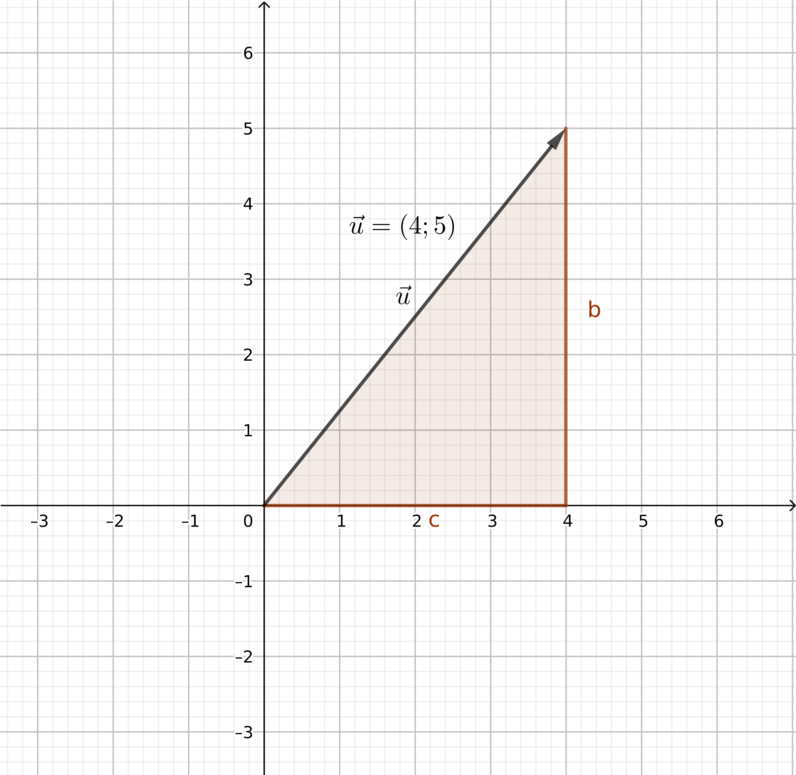

Vecteur, deuxième partie
1. Coordonnées d’un vecteur dans un repère orthonormé
1.1. Définition
Soit \(\vec{u}\) un vecteur, et on considère un repère orthonormé du plan. Alors, le vecteur \(\vec{u}\) admet des coordonnées qui le décrivent.
\begin{center} \begin{tikzpicture}[x=.4cm, y=.4cm] \draw[help lines, ultra thin, step=.4cm] (-2,-2) grid (4,3); \draw[->, thick, color = blue] (-1,0) -- (3,1) node[below] {$\vec{u}$}; \draw[dash, color=black] (-1, 0) -- (3, 0) node [midway] {$4$}; \draw[dash, color=black] (3, 0) -- (3, 1) node [midway] {$1$}; \end{tikzpicture} \end{center}Les coordonnées \((3;4)\) désigne un vecteur qui déplace de \(3\) horizontalement, et de \(4\) verticalement. Les coordonnées peuvent aussi être négatives, voici par exemple le vecteur \((-2; 1)\).
\begin{tikzpicture}[x=.4cm, y=.4cm] \draw[help lines, ultra thin, step=.4cm] (-2,-2) grid (4,3); \draw[->, thick, color = blue] (0,0) -- (-2,1) node[below] {$\vec{u}$}; \end{tikzpicture}Les coordonnées nulles, c’est-à-dire \((0;0)\) désignent le vecteur nul, noté \(\vec{0}\).
1.2. Coordonnées d’un vecteur définit par deux points du plan
À partir de deux points, \(A\) et \(B\), on peut définir le vecteur qui «emmène» le point \(A\) vers le point \(B\), et on le note \(\overrightarrow{AB}\). À partir des coordonnées de \(A\) et de celle de \(B\), on peut en déduire les coordonnées du vecteur \(\overrightarrow{AB}\).
Si \(A\) et \(B\) admettent les coordonnées \((x_{A}, y_{A})\), \((x_{B}, y_{B})\), alors le vecteur \(\overrightarrow{AB}\) a pour coordonnées : \[ \overrightarrow{AB} = ( x_{B} - x_A ; y_B - y_A ) \]
Si \(A(3;4)\) et \(B(-2;-3)\) alors le vecteur \(\overrightarrow{AB}\) a pour coordonnées \[ \overrightarrow{AB} = ( -2 - 3 ; -3 - 4 ) = (-5; -7) \] Donc pour se rendre de \(A\) vers \(B\), il faut se déplacer de \(5\) horizontalement (vers la gauche, puisque la première coordonnée de \(\overrightarrow{AB}\) est \(-5\)), et de \(7\) verticalement (vers le bas).
1.3. Opérations sur les vecteurs, et coordonnées
1.3.1. Coordonnées d’une somme de vecteurs
Si on considère deux vecteurs \(\vec{u}\) et \(\vec{v}\) de coordonnée \((x;y)\) et \((w;z)\), alors si on note \(\vec{z} = \vec{u} + \vec{v}\), le vecteur \(\vec{z}\) a pour coordonnées : \[ \vec{z} = (x + w; y + z) \]
Si \(\vec{u} = (-3;4)\) et \(\vec{v} = (2; 5)\) alors \(\vec{u} + \vec{v} = (-1;9)\)
1.3.2. Multiplication d’un vecteur par un scalaire
Si \(\vec{u}\) est un vecteur, alors \(2 \vec{u}\), \(3\vec{u}\), \(\sqrt{2}\vec{u}\), etc, sont aussi des vecteurs. On peut multiplier un vecteur par n’importe quel nombre réel \(k\), et on notera l’opération \(k \vec{u}\)
Soit \(\vec{u}\) un vecteur, de coordonnées \((x;y)\). Alors, le vecteur \(k \vec{u}\) a pour coordonnées \[ k \vec{u} = (k x ; k y) \]
Si \(\vec{u} = (-3; 5)\), alors \(-2 \vec{u} = (6;-10)\)
1.3.3. Produit scalaire de deux vecteurs
Nous verrons plus tard à quoi sert le produit scalaire \((\vec{u},\vec{v})\) de deux vecteurs \(\vec{u}\) et \(\vec{v}\), mais en quelques mots, le produit scalaire permet d’avoir une idée de l’angle qu’il y a entre deux vecteurs. Le produit scalaire est simple à calculer si vous connaissez les coordonnées de deux vecteurs.
Soit \(\vec{u}\) et \(\vec{v}\) deux vecteurs, de coordonnées respectives \((x;y)\) et \((w;z)\). Alors, le produit scalaire est un nombre, noté \((\vec{u}, \vec{v})\), qui se calcule par : \[ (\vec{u}, \vec{v}) = xw + yz \]
Avec cette formule, on peut remarquer énormément de propriétés associées au produit scalaire. Par exemple,
Pour tout vecteur \(\vec{u}\) et \(\vec{v}\), on a : \[ (\vec{u}, \vec{v}) = (\vec{v}, \vec{u} ) \] Autrement dit, on peut calculer un produit scalaire en notant les vecteurs «dans le sens que l’on veut».
2. Norme d’un vecteur
La norme d’un vecteur \(\overrightarrow{AB}\) représente la distance à parcourir pour emmener \(A\) vers \(B\).
À partir des coordonnées d’un vecteur, on peut calculer sa norme !
Soit \(\vec{u}\) un vecteur, de coordonnées \((x ;y)\). Alors, sa norme se calcule par \[ \lVert \vec{u} \rVert = \sqrt{x^2 + y^2} \]
Ce résultat provient du théorème de Pythagore ! Sur l’image, puisque le triangle est rectangle, d’apres le théorème de Pythagore, on sait que \[ \lVert \vec{u} \rVert^{2} = b^2 + c^2 \] Ce qui revient au calcul plus haut.
Ici, puisque \(\vec{u} = (4;5)\), on a : \[ \lVert \vec{u} \rVert = \sqrt{4^{2}+5^2} = \sqrt{16+35} = \sqrt{41} \approx 6,4 \]

Pour tout vecteur \(\vec{u}\), on peut remarquer que : \[ \lVert \vec{u} \rVert = \sqrt{(u, u)} \]
Le produit scalaire est décidement partout !